地政学
プリシュティナはコソボの首都として、独立承認、セルビアとの関係、EU統合、NATOの影、国際機関の支援を抱えます。官庁街の近さが外交と通学、買物、SNSの政治談義を結び、国家の緊張を生活へ近づけます。議会の声も近いです。
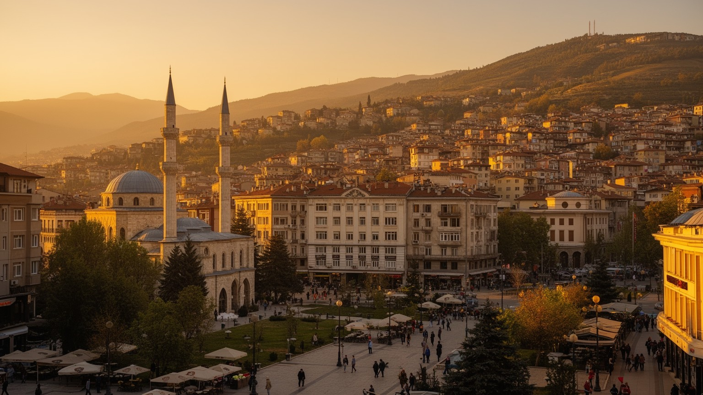
🇽🇰 コソボ / 首都 / World City Atlas
独立後の国家機関、若い人口、大学、国際機関、旧市街のモスク、カフェ文化、戦争記憶、急速な住宅開発が近い距離で重なる、内陸バルカンの首都です。
都市の骨格
プリシュティナは巨大な経済都市ではありません。ですが、コソボの政治、外交、大学、雇用、文化、移住、戦後記憶が集中し、独立後の国家がどのように都市の形を取るかを最も濃く見せる場所です。
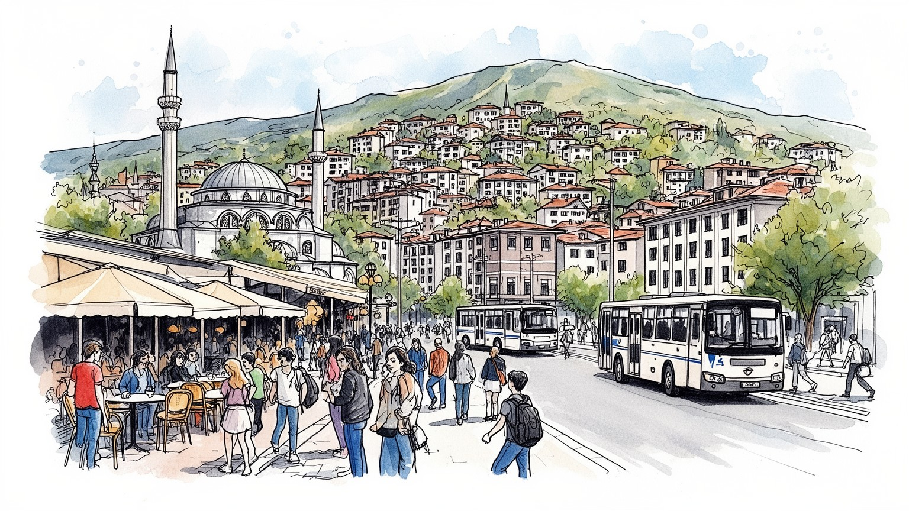
プリシュティナはコソボの首都として、独立承認、セルビアとの関係、EU統合、NATOの影、国際機関の支援を抱えます。官庁街の近さが外交と通学、買物、SNSの政治談義を結び、国家の緊張を生活へ近づけます。議会の声も近いです。
行政、大学、通信、商業、建設、カフェ、国際機関、ITが雇用を作ります。失業と移住の圧力は強いですが、若い世代は語学、送金、起業、公共部門、夜の接客を組み合わせ、働き方を変えています。起業の会話も増えます。
オスマン期のモスク、正教会の記憶、カトリック聖堂、世俗的な大学文化、映画祭、音楽、カフェの会話が重なります。信仰は家族、葬儀、祝祭、近所づきあいの時間を支えています。家族の食卓や夜の広場も記憶を運びます。
旅行者は旧市街、博物館、ニューボーン記念碑、グラチャニツァ修道院、カフェを歩きます。住民は住宅価格、交通、冬の煙たい空気、水、若者の雇用、子どもの遊び場、公共サービスと向き合います。丘の住宅も広がります。
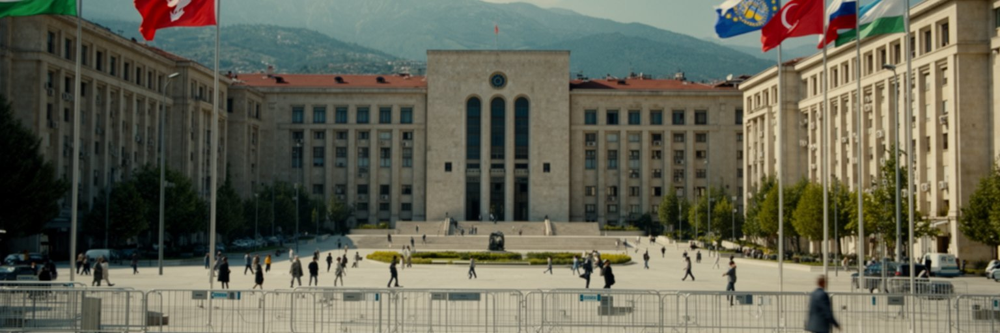
プリシュティナは、独立後のコソボが国家として形を整える過程を、もっとも直接に見せる都市です。議会、政府庁舎、大統領府、裁判所、外国大使館、国際機関の事務所が中心部に集まり、街路の移動やカフェの会話にも政治が入り込みます。首都としての役割は、行政手続きや式典だけではありません。国旗、記念碑、警備、抗議集会、選挙運動、公共放送、大学の議論が、若い国家の正統性を毎日確かめる場を作ります。セルビアが独立を承認していない状況、EU加盟をめぐる長い交渉、NATOと国連の記憶は、プリシュティナを地域政治の小さな舞台にとどめません。市民にとって国家建設は抽象的な理念ではなく、身分証、教育、雇用、司法、インフラ、言語権として経験されます。中心部の広場を歩くと、国家の象徴が若者の日常と重なり、祝祭と不満が同じ公共空間を使っていることが分かります。首都の成長は誇りを生む一方、政治と公共部門への依存、縁故主義への批判、地方との格差も映し出します。プリシュティナを読むことは、独立した国家が紙の制度から生活の制度へ変わる過程を読むことです。公共施設の看板、警察の配置、抗議で閉じる通り、祝日に掲げられる旗は、政治が遠い議場に閉じていないことを示します。首都の成熟は、象徴を増やすだけでなく、住民が制度を信頼し、生活を支える仕組みとして使えるかで測られます。
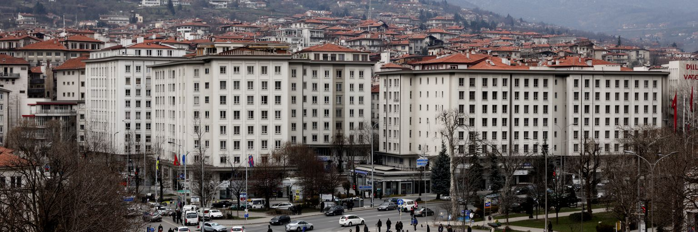
プリシュティナの地政学は、地図上の位置だけでは説明できません。コソボはアルバニア、北マケドニア、モンテネグロ、セルビアに囲まれ、地域の道路網と移住の流れの中にありますが、都市を最も強く形づくるのは承認と未承認の政治です。独立を支持する国、慎重な国、認めない国の立場は、外交、投資、旅行、スポーツ、大学交流、通信番号にまで影響します。プリシュティナでは欧州連合、米国、NATO、国連系機関、周辺国の存在が見えやすく、外部支援と主権の感覚が複雑に重なります。北部のセルビア系住民地域との緊張、自治体連合をめぐる議論、国境管理、車のナンバー、通貨、教会財産の問題は、首都の政治ニュースを生活の不安へ変えます。ですが街は対立だけで動いているわけではありません。学生、商人、家族、ディアスポラ、バス会社、通訳、NGO職員は、国境をまたぐ親族関係と仕事を日々つないでいます。プリシュティナを外交の都市として読むには、大使館や声明だけでなく、空港の到着口、送金窓口、多言語の職場、抗議の広場を見る必要があります。境界は線ではなく、人の移動と制度の摩擦として都市に現れます。国際会議の言葉は抽象的でも、通関、保険、学位認証、電話契約の不便は市民に具体的に届きます。外交の成否は、若者が旅行し、働き、学ぶ範囲を静かに広げたり狭めたりします。家族も動きます。
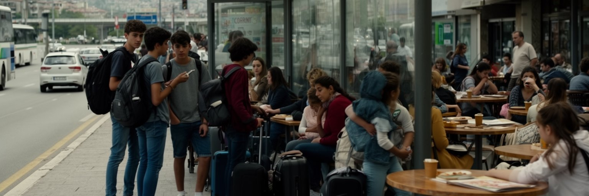
プリシュティナの街角には若さが目立ちます。大学、語学学校、カフェ、共同作業スペース、夜の通りには、戦後に育った世代の速度があります。コソボは欧州の中でも若い人口構成を持つ一方、雇用の不足、賃金の低さ、ビザ、教育機会を理由に、ドイツ、スイス、オーストリア、北欧、米国へ向かう移住も強いです。多くの家庭では、国外にいる親族からの送金が住宅、教育、起業、医療を支え、都市の消費や建設を動かします。若者にとってプリシュティナは可能性の中心であり、同時に出発点でもあります。英語やドイツ語を学び、ITやデザインで働き、公共部門や国際機関を目指す人もいれば、安定した収入を求めて国外へ出る人もいます。移住は単なる人口流出ではなく、家族の戦略、技能の循環、都市の不動産市場、政治への期待を変える力です。カフェのにぎわいは活気に見えますが、その会話には就職の不安、ビザの予定、帰国するかどうかの迷い、SNSで流れる求人や友人の国外生活も混じります。プリシュティナを若い都市として読むには、人口の若さを楽観だけで扱わず、教育から雇用へつながる通路が十分か、若者が自国に残って生活を築けるかを見る必要があります。帰省する親族が持ち込む資金、言語、価値観は、結婚式、住宅、消費、政治観まで変えます。若さは人口統計ではなく、都市が人を引き止められるかを試す問いです。働き続けられる通路を作れるかが、首都の信頼を左右します。
プリシュティナの経済は、重工業や巨大港ではなく、行政、教育、商業、建設、通信、金融、国際機関、ITサービスに支えられます。首都には省庁、自治体、裁判所、公社、病院、大学、報道機関が集中し、公共部門は安定した雇用と政治的な争点の両方を生みます。プリシュティナ大学をはじめとする高等教育機関は、学生を地方から集め、教師、医師、法律家、技術者、ジャーナリスト、通訳、起業家を育てます。近年は若いIT人材やアウトソーシング、デザイン、デジタル業務も増え、低コストの労働力だけでなく語学力と時差の近さを生かした欧州市場とのつながりが生まれています。一方で、公共部門への就職競争、非公式な人脈、民間部門の賃金、女性の労働参加、技能と求人のずれは重い論点です。都市の中心にあるカフェは社交だけでなく、就職情報、商談、政治談義、フリーランスの仕事場として機能します。プリシュティナを産業から読むには、オフィスビルの数だけでなく、大学から職場へ移る若者の道筋、行政改革の実効性、小規模企業が制度に守られて成長できるかを見る必要があります。知識産業の厚みは、若い首都が移住だけに頼らない未来を持てるかを左右します。病院や学校の現場では、専門職の不足と国外流出が同時に語られます。技能を国内で評価し、民間企業が安定して雇える環境を作れるかが、首都経済の次の厚みを決めます。
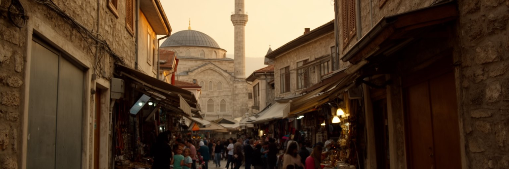
プリシュティナの旧市街には、オスマン期以来のモスク、市場、細い路地、商店、家族の記憶が残ります。ファティフ・モスクやチャルシア周辺の宗教建築は、街がイスラム文化圏の交易都市として歩んだ時間を示す一方、近郊のグラチャニツァ修道院や市内の教会、カトリック聖堂は、コソボの信仰が単一ではないことを伝えます。宗教はしばしば民族政治の緊張と結びつけて語られますが、日常の場面では礼拝、断食月、結婚、葬儀、近所の挨拶、慈善活動として現れます。プリシュティナの世俗的な若者文化と信仰は対立するだけではなく、同じ家族や同じ通りの中で折り合いをつけています。旧市街の市場では、焼きたてのパン、肉料理の匂い、衣料、修理、カフェが生活のリズムを作り、観光客が写真に収める建物の周りで住民の用事が重なります。都市再開発や道路拡幅が進むほど、古い宗教空間と市場の細かな生活は失われやすいです。プリシュティナを宗教から読むには、モスクの美しさだけでなく、信仰施設が貧困、孤立、家族行事、多民族関係をどう受け止めているかを見る必要があります。祈りの時間と市場の声が重なる旧市街は、首都の近代化を地面につなぎとめています。近代的な庁舎やガラス張りの店が増えても、金曜礼拝や祝祭の準備は家族の動線を変えます。古い市場を残すことは、宗教的記憶だけでなく日用品を買う権利を守ることでもあります。それは都市の足元に残る公共性でもあります。
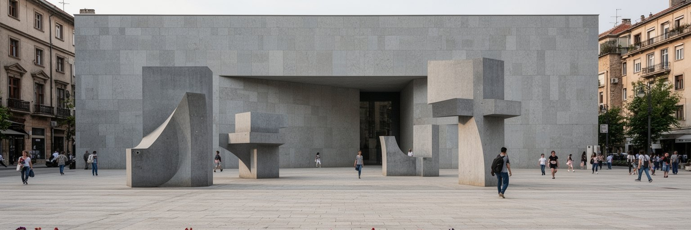
プリシュティナの公共空間には、戦争と独立の記憶が強く刻まれています。ニューボーン記念碑、行方不明者の写真、戦争犠牲者をめぐる展示、解放を祝う広場の行事は、都市が新しい国家の物語を作ってきた過程を示します。コソボ紛争は家族の喪失、避難、帰還、財産、国際介入、裁判、証言の問題として、今も生活に影を落とします。記念碑は誇りや追悼の場であると同時に、誰の記憶が中心に置かれ、誰の痛みが見えにくいかを問う場所でもあります。若い世代は戦争を直接経験していない場合も多いですが、学校教育、家族の話、国の祝日、街の名前を通じて記憶を受け取ります。観光客にとって記念碑は写真の対象になりやすいですが、住民にとっては政治的立場、家族史、未解決の傷が重なる空間です。プリシュティナを記憶の都市として読むには、英雄の像だけでなく、女性の経験、少数者の記憶、司法の遅れ、和解の難しさを見る必要があります。公共空間は過去を飾るだけではなく、現在の共同体が何を共有し、何をまだ話せていないかを映します。広場を歩くことは、独立の喜びと戦後社会の重さを同時に引き受ける経験です。追悼行事のある日だけでなく、通勤者が像の横を急ぐ朝にも記憶は街に残ります。記念の場所を開かれた公共空間として使い続けることが、過去を固定せず対話へつなげる条件になります。語れない痛みに場所を与えることも、首都の役割です。
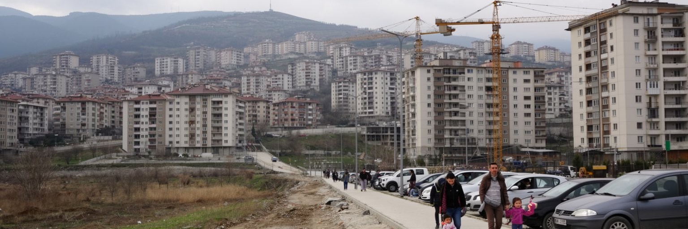
プリシュティナは戦後、人口、行政機能、大学、商業、ディアスポラ資金が集中し、住宅地と集合住宅が急速に広がりました。中心部の周辺や丘陵地には新しいアパート、家族住宅、商業施設が増え、道路、学校、公園、上下水道、駐車場の整備が追いつかない場所もあります。送金と不動産投資は街の建設を押し上げるが、建物の質、耐震性、断熱、公共空間、歩行者の安全が十分に管理されなければ、成長は生活の負担に変わります。若い家族や学生は部屋を求め、地方から来た人は首都の機会を探し、国外にいる親族は帰国時の住まいを確保します。こうした需要が重なり、住宅価格や家賃は所得との距離を広げます。都市形態を見ると、プリシュティナは計画された首都というより、戦後の自由化、行政の弱さ、家族の自助、民間開発が同時に作った都市です。狭い歩道、車の多さ、建物の密度、丘の坂道、緑地の不足は、毎日の移動と健康に関わります。プリシュティナを住宅から読むには、完成した新築だけでなく、未舗装の道、学校までの距離、冬の暖房費、子どもが遊べる場所を見る必要があります。首都の成長を住みやすさへ変えるには、建設量だけでなく公共性の設計が問われます。建物の一階が駐車場や空き店舗になれば、通りの安全とにぎわいは弱くなります。住宅を増やす政策は、緑地、保育、学校、バスを同じ速度で整える都市政策でなければなりません。
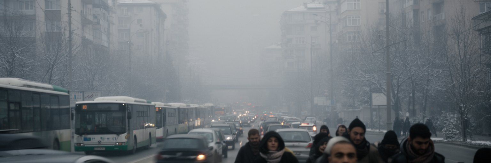
プリシュティナの日常を左右する大きな難題が、交通と大気です。首都には地方からの通勤、行政手続き、大学、病院、商業の用事が集中し、車とバスが中心部へ流れ込みます。道路の拡幅や環状道路、バス路線の改善は進みますが、歩道の狭さ、駐車、渋滞、古い車両、郊外住宅地の広がりが移動を難しくします。鉄道は国の象徴として残るものの、日常交通の主役にはなりきれていません。空港はディアスポラと国際機関を結ぶ重要な玄関であり、夏休みや年末には帰省の流れが都市を一気に変えます。冬には石炭火力発電、暖房、車の排気、盆地状の気象条件が重なり、大気汚染が深刻になることがあります。空気の悪さは単なる環境上の論点ではなく、子ども、高齢者、屋外労働者、低所得世帯の健康にも関わります。プリシュティナを交通から読むには、幹線道路だけでなく、バス停で待つ学生、ベビーカーが通れない歩道、夜勤者の帰宅、空港へ向かう家族を見る必要があります。首都の便利さは、車を持つ人だけでなく、歩く人、バスに乗る人、冬の空気を吸う人にとって測られなければなりません。移動と空気の改善は、若い都市の生活の質を決める基礎です。バスの信頼性が上がれば、学生や高齢者の選択肢は広がり、中心部の駐車圧力も下がります。大気対策は発電や暖房の政策と結び、家庭の光熱費を無視せず進める必要があります。求められます。
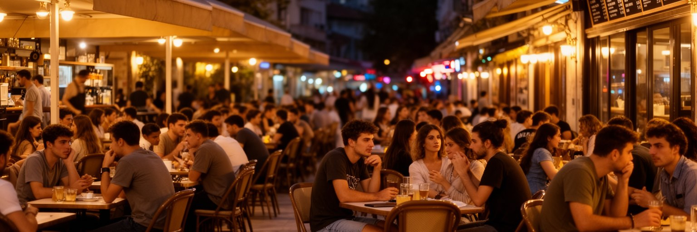
プリシュティナを歩くと、カフェの多さと人の集まり方が印象に残ります。昼のエスプレッソ、夜のバー、学生の会話、政治談義、起業の相談、帰省したディアスポラとの再会が、街のリズムを作っています。カフェは単なる余暇空間ではなく、仕事探し、情報交換、恋愛、文化イベント、音楽、映画、NGOの打ち合わせが重なる半公共の場所です。家庭や職場の外に人が集まる場が多いことは、若い都市の活力を見せる一方、消費できる人とできない人の差も映します。夜のにぎわいは自由な雰囲気を作りますが、騒音、ジェンダーの安全、飲酒、交通、家族規範との摩擦も生みます。プリシュティナの文化は、伝統的な家族関係と国際的な若者文化が混ざり、アルバニア語、英語、ドイツ語が会話の中で行き来します。映画祭、音楽、現代美術、独立系メディア、書店、大学のイベントは、国家建設の重い議論を生活の創造性へ変える役割を持ちます。ラジオやSNSの投稿はライブ告知、政治風刺、求人を素早く広げ、スポーツの試合日は小さな店にも応援の声が満ちます。カフェ文化を読むには、しゃれた内装だけでなく、そこに入れる所得、働くスタッフの賃金、女性や少数者が安心して過ごせるかを見る必要があります。会話の場が開かれているほど、都市は政治だけでなく市民社会の厚みを持ちます。歩道に椅子が広がる風景は魅力的ですが、公共空間の占有や近隣の睡眠ともぶつかります。自由な夜を支えるには、交通、安全、騒音、働く人の労働時間を同時に調整する必要があります。
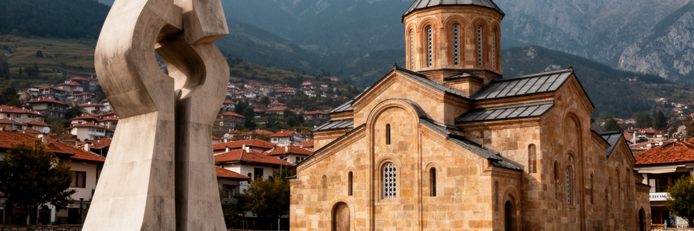
プリシュティナの観光は、壮大な名所が密集する都市とは違う楽しみ方を求めます。国立図書館の独特な建築、ニューボーン記念碑、コソボ博物館、旧市街のモスク、市場、マザー・テレサ大通り、カフェ、壁画、夜の広場を歩くことで、独立後の首都の空気に触れられます。少し足を延ばせば、セルビア正教の重要な遺産であるグラチャニツァ修道院、古代都市ウルピアナの遺構、ガディメ洞窟、周辺の湖や丘陵があります。観光はコソボの国際的なイメージを変える機会ですが、戦争の記憶や民族関係を単純な物語にして消費する危険もあります。旅行者は安い都市、若いカフェ、親切な人々という印象を持ちやすいが、その背後には失業、移住、承認問題、文化財保護、宗教的な緊張があります。プリシュティナを旅する意味は、完成された観光都市を眺めることではなく、変化の途中にある首都の層を読むことにあります。観光施設の案内、公共交通、歩行者空間、博物館の展示、多言語情報が整えば、訪問者は消費だけでなく理解へ近づけます。遺産を訪れる時は、誰の信仰と記憶の場なのかを尊重する姿勢が必要です。プリシュティナ観光は、近郊を含めて初めて立体的になります。ホテルや飲食店の雇用が増えるほど、案内人、運転手、清掃、博物館職員の技能も重要になります。小さな首都の観光は、量よりも文脈を伝える質で評価されるべきです。
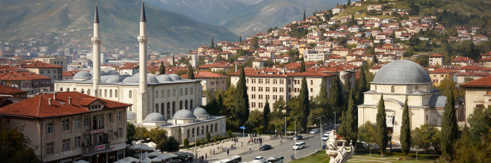
プリシュティナを読む面白さは、都市の規模よりも背負っている役割の大きさにあります。ここには独立後の国家機関、国際機関、大学、カフェ、旧市街の祈り、戦争記憶、新築住宅、移住の家族戦略が同時に集まります。経済規模は欧州の大都市に比べて小さいですが、政治的な密度は高く、承認問題やセルビアとの関係は市民の制度、移動、将来設計に影響します。若い人口は活気を生む一方、仕事が十分でなければ国外移住へ向かいます。カフェの明るさは希望を見せますが、冬の大気汚染、住宅価格、交通渋滞、公共サービスの弱さは、首都の生活を重くします。宗教や民族の記憶は対立の記号になりやすいですが、市場、葬儀、祝祭、近所づきあいの中では日常の時間として息づきます。プリシュティナは完成した首都ではなく、制度、建物、記憶、若者の選択がまだ組み上がる途中の都市です。だからこそ、政府庁舎だけでなく、バス停、学生寮、丘の住宅地、旧市街の店、修道院へ向かう道、空港の帰省客を見る必要があります。そこに、戦後社会が国家を作り、同時に普通の暮らしをどう守ろうとしているかが現れます。プリシュティナは小さくても、現代バルカンを読むための濃い入口です。都市の未来は、国際承認の前進だけでは決まりません。若者が残れる仕事、清い空気、信頼できる行政、記憶を尊重する公共空間を積み上げることが、首都の力を生活へ変えます。